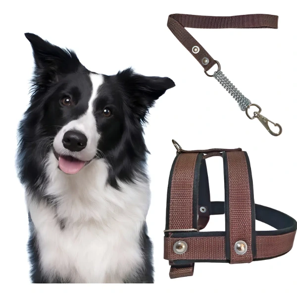

Peitoral Reforçado para Cachorro Grande Chow Chow Rotweiller de Cor Marrom Tamanho M

Preço: R$40,87
Detalhes do Produto
PEITORAL FITA:Peitoral totalmente produzido em fita, reforçado com borracha e acabamentos em veludo, costurado, ferragens niqueladas, com alto índice de durabilidade. Mola anti-impacto. Proporciona conforto e segurança para o pet e para quem o conduz.
Tamanhos disponíveis:
- Tamanho PPP-
- PESCOÇO: Circunferência Máxima 49 cm;
- PEITO (TÓRAX): Regdlável 40 cm a 55 cm
- 1º furo: 40 cm;
- 2º furo: 43 cm;
- 3º furo: 46 cm;
- 4º furo: 49 cm;
- 5º furo: 52 cm;
- 6º furo: 55 cm.
Acompanha uma guia em fita de polipropileno com 80 cm de comprimento e mosquetão.
- Tamanho PP-
- PESCOÇO: Circunferência Máxima 58 cm;
- PEITO (TÓRAX): Regdlável 54 cm a 66 cm
- 1º furo: 54 cm;
- 2º furo: 57 cm;
- 3º furo: 60 cm;
- 4º furo: 63 cm;
- 5º furo: 66 cm.
Acompanha uma guia em fita de polipropileno com 80 cm de comprimento e mosquetão.